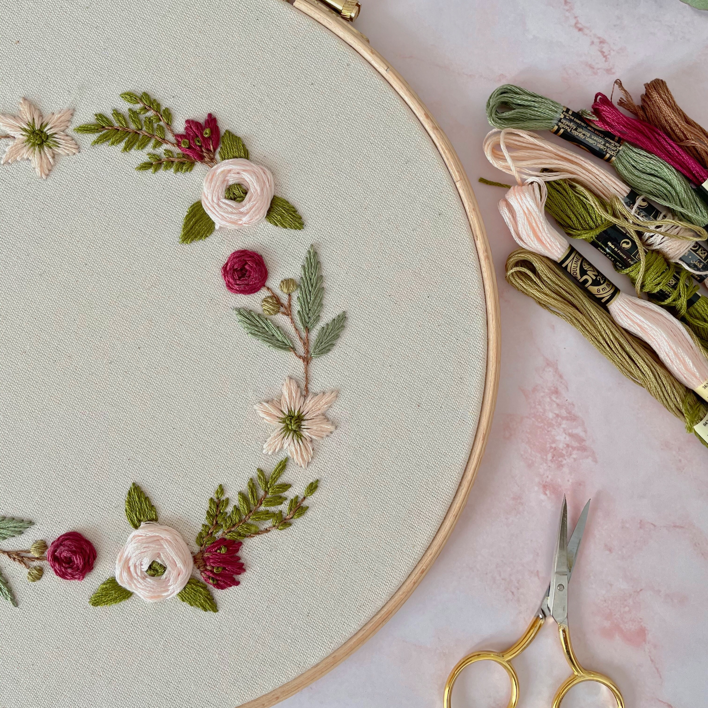
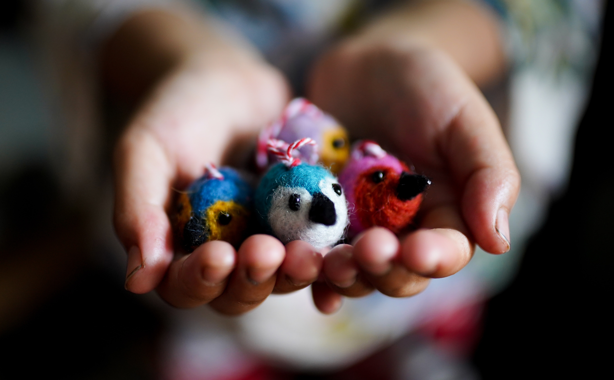
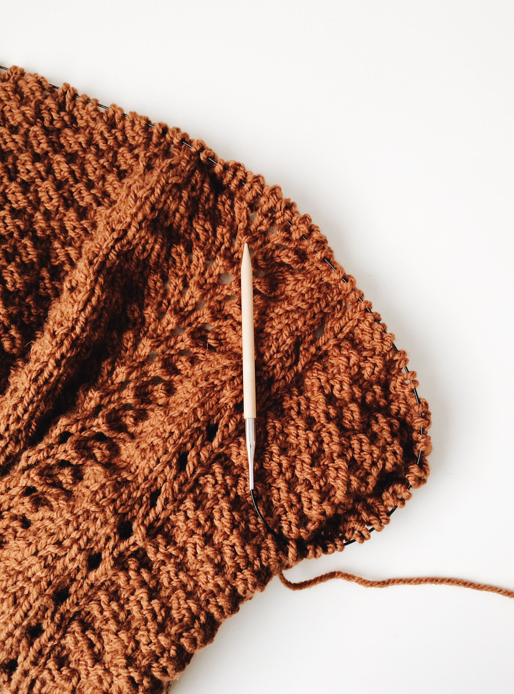

Durante a pandemia, enquanto ficamos em isolamento social, começamos
a fazer vários artesanatos como um hobby familiar. E hoje, com sorte
nos tornaremos um negócio rentável.
Todas nós, mãe, filha, nora, sobrinhas, nos dedicamos para criar
nossos produtos com muito amor e carinho.
E esse site é a demonstração de todo esse trabalho. Divulgaremos
aqui todos os produtos de artesanato criados pelo grupo de artesãs
do Uirá.
Artesanto em argila
Bonecos
Objetos de cerâmica

Bordados
Panos de prato
Toalhas de mesa

Enfeites de natal
Passarinhos
Anjos

Tricô e Crochê
Tapetes
Roupas
Conheci a Dona Sônia no ano passado e quando vi os artesanatos que
ela faz no grupo, me apaixonei. Comprei vários.
Maria Ignacia de Jesus
Todos os produtos são feitos com muito amor. Sempre que tem uma
novidade, acabo comprando.
Sara Priscila Comprei vários produtos e não me arrependo. Francisca de Assis